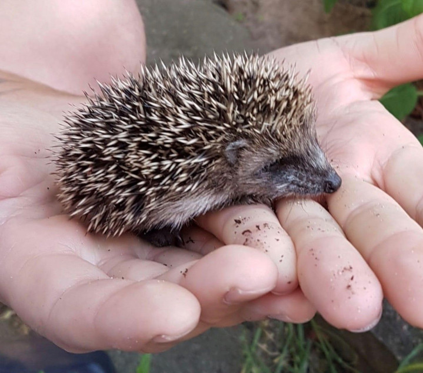
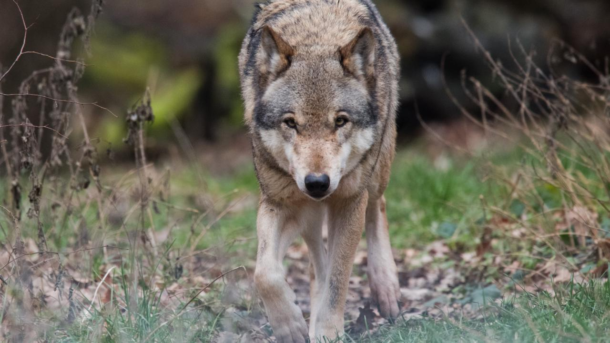

Op 4 april was een officiele onderzoek gestart over egels in nederland.
De wetenschappers moesten gaan kijken naar de actuele situatie
rondom een heel klein en schattig diersoort, de egel dus.
Naar aanleiding van die onderzoek kunnen egelliefhebbers heel blij zijn.
De populatie van de egel blijft maar groeien en is de laatste 3 jaar 20% omhoog gegaan.
De wolven blijven maar een heel grote mysterie voor ons land.
Hebben we enige kans erop dat de wolven terugkeren naar Nederland?
Volgens de Telegraaf wel.
Wolven zijn een diersoort die zich constant verplaatst en dat geeft ons
een mogelijkheid op het feit dat het diersoort ooit vanzelf terugkomt